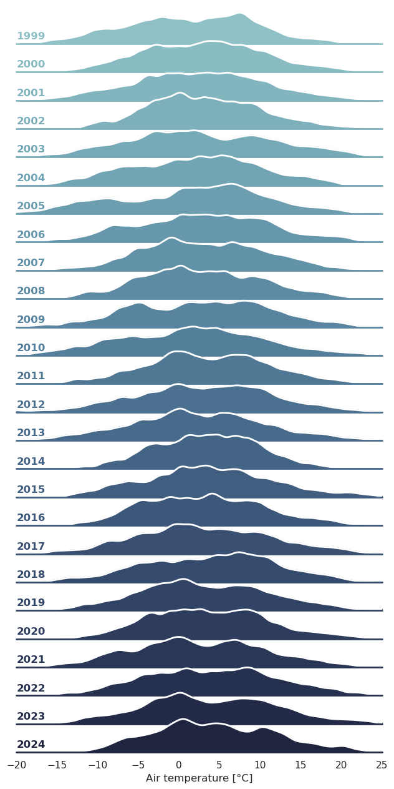

Code
import numpy as np
import pandas as pd
import seaborn as sns
import matplotlib.pyplot as plt
df = pd.read_csv("obergurgl.csv")
df["timestamp"] = pd.to_datetime(df["timestamp"])
df = df[["timestamp", "tl"]]
df = df.dropna(axis="rows")
df["year"] = df["timestamp"].dt.year
df["doy"] = df["timestamp"].dt.day_of_year
df = df.set_index("timestamp")
df = df.loc[df.index < "2025-01-01"]
variable = "tl"
sns.set_theme(style="white", rc={"axes.facecolor": (0, 0, 0, 0)})
pal = sns.cubehelix_palette(len(df["year"].unique()), rot=-0.25, light=0.7)
g = sns.FacetGrid(df, row="year", hue="year", aspect=14, height=0.5, palette=pal)
bw = 0.5
g.map(
sns.kdeplot, variable, bw_adjust=bw, clip_on=True, fill=True, alpha=1, linewidth=1.5
)
g.map(sns.kdeplot, variable, clip_on=True, color="w", lw=2, bw_adjust=bw)
g.refline(y=0, linewidth=2, linestyle="-", color=None, clip_on=False)
def label_ax(x, color, label):
ax = plt.gca()
ax.text(
0,
0.2,
label,
fontweight="bold",
color=color,
ha="left",
va="center",
transform=ax.transAxes,
)
g.map(label_ax, "tl")
def set_xlim(color, label, xmin, xmax):
ax = plt.gca()
ax.set_xlim((xmin, xmax))
g.map(set_xlim, xmin=-20, xmax=25)
g.figure.subplots_adjust(hspace=-0.25)
g.set_titles("")
g.set(yticks=[], ylabel="")
g.despine(bottom=True, left=True)
g.set_xlabels("Air temperature [°C]")
plt.savefig("temp.png", dpi=100, bbox_inches="tight")
plt.show()